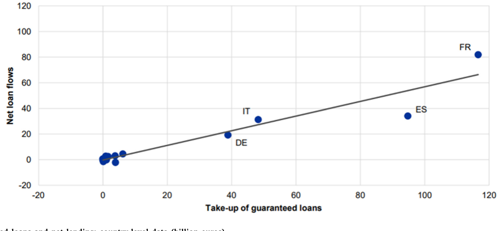
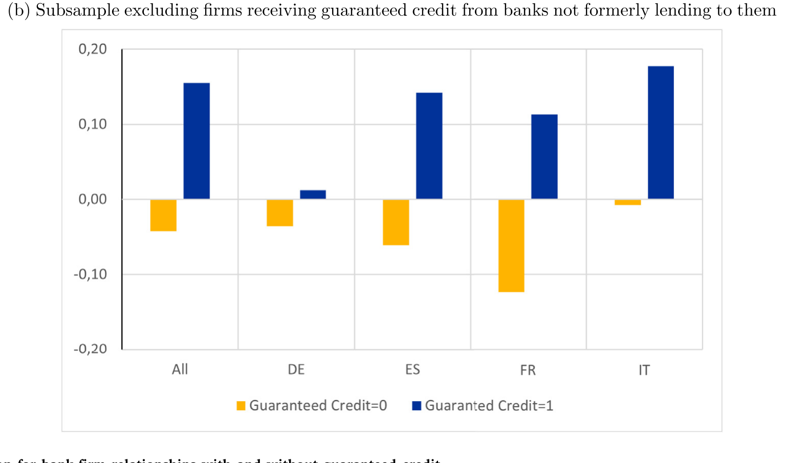
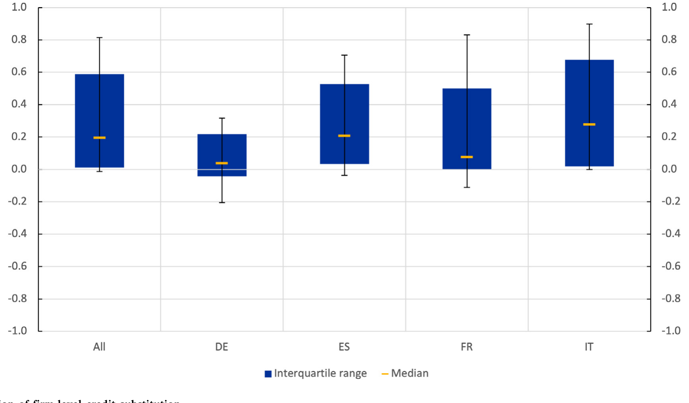
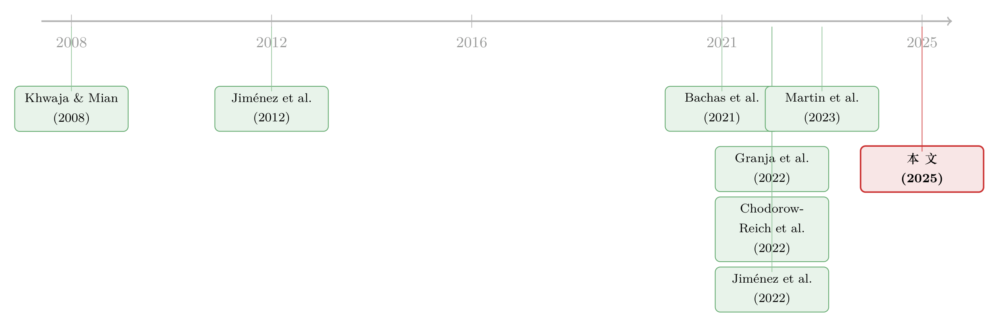

一块钱的担保，换走了多少自己的风险？——疫情贷款担保里的「信贷替代」
本文读的是 Altavilla, Ellul, Pagano, Polo & Vlassopoulos (2025, Journal of Financial Economics)：用欧元区 AnaCredit 信贷登记数据和 COVID-19 担保贷款计划做实验场，作者发现，银行每发放 1 欧元的政府担保贷款，就会同时把对【同一家企业】的非担保信贷削减约 28 欧分——这部分被削掉的，正是银行原本自己扛着、如今悄悄甩给了纳税人的存量风险。但故事还有另一面：被替代得越多的企业，反而拿到了更便宜、更长期的贷款。
1 一个让政策制定者夜不能寐的问题
政府担保贷款（loan guarantees）是个老掉牙的政策工具。它的逻辑朴素得近乎天真：企业借不到钱，是因为银行怕它违约；那好，政府站出来替企业的违约风险兜底，银行没了后顾之忧，自然就敢放贷了。尤其在危机时刻，当一家本来还活得好好的企业，可能因为债务链条上别人的违约而被连累拖垮（Glode and Opp, 2023；Antill and Clayton, 2025），这种「兜底」就显得格外重要。2020 年新冠疫情砸下来，欧洲各国政府几乎是条件反射式地祭出了天量的担保贷款计划。
可是，这里藏着一个让政策制定者夜不能寐的问题。
设想一下：一家企业，本来就欠着某家银行一笔【没有担保】的贷款。现在政府的担保计划来了。银行完全可以怂恿企业：「来，用这笔【有政府担保】的新贷款，把你欠我的那笔旧贷款还掉。」从企业的角度看，债务总额没怎么变；但从银行的角度看，它手里那笔自己扛着违约风险的旧债，摇身一变成了由国家兜底的新债。风险，就这样从银行的资产负债表，悄无声息地转移到了纳税人头上。 信贷的总量一分钱没多，受益的只有银行。
这不是杞人忧天。Blanchard et al. (2020) 早就警告过这种「存量风险转移」；英国的 Greensill 银行就被《金融时报》揭露用三国政府的担保贷款来削减自己对一家陷入困境企业的敞口；意大利和西班牙的报纸也都在质问：这些担保，到底是在保企业，还是在保银行？
于是本文的核心问题就是：当银行发放一笔担保贷款时，它会不会【同时】抽走自己对同一家企业的非担保信贷？ 作者给这个行为起了个名字，叫「信贷替代」(credit substitution)。
从宏观上看，这个担心似乎有几分道理。2020 年 4 到 8 月，欧元区的净贷款增长，远远没有跟上担保贷款的扩张步伐——不是一对一地增加。

Figure 1: Guaranteed loans and net lending: country-level data (billion euros)
但作者很清醒：这种宏观相关性本身【什么也证明不了】。净贷款增长慢，可能是企业本来就不想借，也可能是替代真的发生了，两者在国家加总数据里根本分不开。要把「替代」从一团乱麻里拎出来，必须下沉到【一家一家企业、一笔一笔贷款】的微观数据。这正是本文最硬的地方。
2 先讲清楚一个模型
在动数据之前，作者先搭了一个小模型，用来回答两个问题：替代【会不会】发生？又【在谁身上】发生得最厉害？这个模型虽然简单，却为后面所有的实证预测提供了骨架，值得一步步看清楚。
2.1 设定
世界上有一个连续统的企业，每家企业可以做两种项目，大小不同。小项目成本为 \(I_s\)，成功了赚 \(Y\)，失败了归零；大项目成本 \(I_\ell > I_s\)，成功赚 \(X\)，失败归零。企业自己一无所有，项目得百分之百靠银行贷款来融资。投资者风险中性、不贴现。
企业有好坏之分：好企业（\(g\)）失败概率为 \(p\)，坏企业（\(b\)）失败概率为 \(p+\Delta\)（\(\Delta>0\)，所以坏企业更容易完蛋）。两个关键假设：
- 小项目【就算坏企业来做，也是正 NPV】：\((1-p-\Delta)Y > I_s\)；
- 大项目【就算好企业来做，也是负 NPV】：\((1-p)X < I_\ell\)。
那为什么还有人想做大项目？因为大项目能产生一块【不可质押】的私人收益 \(B\)（来自道德风险或企业主的私人侵占），大到好企业宁愿做大项目也不愿做小项目——只要它能融到资：
$$ B + (1-p)(X-Y) > I_\ell - I_s . $$
接着，政府担保登场。担保贷款规模为 \(L_G\)，它的设计很讲究——足以让【好企业】做大项目变得可行，但【坏企业】不行：
$$ (1-p)X > I_\ell - L_G > (1-p-\Delta)X , $$
其中 \(I_\ell - L_G\) 是大项目里没被担保覆盖、还得企业自己想办法的那部分成本。这个不等式翻译成人话就是：担保的「火候」刚刚好，能放松银行对好风险的信贷标准，但不至于把钱送到坏风险手里。同时约定 \(L_G \le I_s\)，担保额不超过小项目的成本。
2.2 没有担保时的均衡
先看基准世界。没有担保，大项目是负 NPV，没人做，所有企业只能做小项目。市场完全竞争，银行赚零利润，于是好、坏企业各自的承诺还款额（pledged repayment）由「期望还款 = 成本」定出：
$$ F_{sg} = \frac{I_s}{1-p}, \qquad F_{sb} = \frac{I_s}{1-p-\Delta} . $$
坏企业违约概率高，所以得承诺还得更多（\(F_{sb} > F_{sg}\)），对应更高的利率。两类企业的期望收益恰好等于各自项目的 NPV：
$$ \Pi_{sg} = (1-p)(Y - F_{sg}) = (1-p)Y - I_s, \qquad \Pi_{sb} = (1-p-\Delta)Y - I_s . $$
2.3 担保来了之后：关键的一步推导
现在，在合同已经签好之后，政府突然宣布提供规模为 \(L_G\) 的担保贷款。这会让企业和银行都想重新谈判原来的合同。
先看竞争性谈判的情形（即企业能从别的银行拿到有竞争力的报价，从而有筹码威胁原来的银行）。企业一旦够资格拿担保贷款，它会想把非担保贷款【按担保额全部替换掉】——因为担保贷款利率为零（违约风险由政府吸收）。为了让银行还能保本，好、坏企业的承诺还款额双双下降：
$$ F_{sg}' = \frac{I_s - L_G}{1-p}, \qquad F_{sb}' = \frac{I_s - L_G}{1-p-\Delta} . $$
现在到了整个模型最关键的一步。把新的还款额代回去，算好企业的期望收益：
同理，坏企业的收益变成 \(\Pi_{sb}' = \Pi_{sb} + (p+\Delta)L_G\)。
把这两条放在一起看，模型的两个核心预测就跳出来了：
预测一（替代随风险递增）。 担保打开了一条把违约风险甩给政府的通道。银行会对【越危险】的借款人，把非担保贷款削减得【越狠】——因为坏企业违约概率高，转移出去的风险更值钱。安全的企业甚至可能因此拿到【更多】非担保贷款。于是：信贷替代应当与企业风险【正相关】。
预测二（替代的反面是利率下降）。 注意上面那块 \(pL_G\) 和 \((p+\Delta)L_G\)——它们是企业【白捡】的那部分好处。坏企业捡得更多（\(\Delta>0\)）。换句话说，被替代得越厉害的企业，反而是信贷成本降得越多的企业。替代与利率下降，在企业横截面上应当【正相关】，且对风险企业更明显。
但真正关键的转折在于讨价还价的能力。 上面的推导有个前提：企业能从别的银行拿到竞争性报价。可如果企业【没有】这个筹码呢？比如它只和一家银行有往来。那么原来的银行就能开出一个「要么接受、要么拉倒」(take-it-or-leave-it) 的报价：一边发放担保贷款，一边把非担保贷款的利率提到足够高，把担保的全部好处自己吞掉，让企业的总融资成本【一分钱不变】。此时坏企业被迫承诺的还款额变成：
$$ F_{sb}'' = \frac{I_s}{1-p-\Delta} - L_G , $$
这个值比竞争情形下的 \(F_{sb}'\) 要高——多出来的部分，正是银行从政府担保里攫取的利润。
于是模型给出了一个漂亮的、可检验的张力：担保的好处到底落到企业还是银行手里，取决于双方的议价能力。 这一点，后面会被数据验证。
3 识别策略：在「同一家企业」内部做减法
模型有了，怎么把它搬到数据上？这里是全文方法论的精髓。
最朴素的做法，是看「拿了担保贷款的企业」和「没拿的企业」非担保信贷怎么变。但这立刻撞上一堵墙：拿到担保贷款的企业【不是随机抽样】——它们的资质由计划的准入规则决定。更要命的是反事实问题：那些拿了担保、随后又被砍了非担保信贷的企业，往往本来就更脆弱、受冲击更重；就算没有担保，它们也可能照样被砍信贷。 你观察到的「替代」，可能只是这些企业本就要面对的信贷收缩。
作者的破解之道，是借用 Khwaja and Mian (2008) 的经典思路：不在企业之间比，而在【同一家企业内部】比。
具体说，把样本锁定在【从多家银行借钱】的企业上。对同一家企业，比较两类银行的行为：一类是给它发了担保贷款的银行，另一类是同样借钱给它、但没发担保贷款的银行。由于是同一家企业，那些「企业本来就该被收缩信贷」的因素——企业的资质、所受冲击、前景——对所有给它放贷的银行是【共同的】，会被企业固定效应 (firm fixed effects) 一笔勾销。剩下的两家银行之间的差异，才是担保贷款本身带来的替代。
这一招的妙处在于：那些「没发担保贷款的银行」，恰好充当了「发了担保贷款的银行如果没发会怎么做」的反事实。同一家企业、同一时点、不同银行——把企业层面一切共同的需求与风险冲击都吸收掉了。回归里还加了银行固定效应，控制银行自身在疫情期间放贷倾向的差异（比如有些银行 IT 系统更强、处理担保申请更快，见 Core and De Marco, 2023）。
信贷替代的度量也很直接：它被定义为非担保信贷在疫情期相对疫情前水平变化的【负值】。(因此那些疫情后才第一次进入信贷市场的企业被排除在外。)
当然，这个设计本身也有两层选择问题，作者都做了交代。第一，给企业发担保贷款的银行不是随机挑的。作者去看了——发担保贷款的银行，往往是【资本更厚、规模更大、与企业关系更紧】的银行。而这类银行在危机中本就倾向于多放贷（Bolton et al., 2016；Jiménez et al., 2012），所以如果有偏，方向是【低估】替代——真实的替代只会比估出来的更严重。第二，多银行企业本身可能和总体不一样。为此作者把单银行企业也纳进来，换用「行业-地区-规模固定效应」重估，结果定性一致，替代幅度还高出约 2% 到 6%。
4 数据
数据来自欧元区的 AnaCredit 信贷登记，是企业-银行配对的颗粒级数据，覆盖欧元区四个最大的经济体。实验窗口是 2020 年疫情第一波、担保计划集中铺开的时期。描述统计见表 1。担保贷款的规模和数量都明显向中小企业倾斜，这和「大企业靠提取已有授信额度自救、中小企业只能靠担保贷款」的既有发现一致（Acharya and Steffen, 2020；Chodorow-Reich et al., 2022）。
5 主要结果：28 欧分
核心数字只有一个，但分量很重：银行每发放 1 欧元担保贷款，相对于同样借钱给这家企业、却没发担保贷款的其他银行，它会把对这家企业的非担保信贷削减约 28 欧分。
这就是「信贷替代」的实锤。从政府兜底的 1 欧元里，约有 28 欧分并不是【新增】的信贷，而是把银行原本自己扛着的存量风险，平移给了纳税人。
接着，模型的预测一一被验证。替代的程度【高度异质】：
- 对【风险更高、规模更小】的企业，在【受疫情冲击更重】的行业和国家，替代最严重；
- 向【更强壮的银行】（不良贷款
NPL更少）借钱的企业，被替代得更多——因为这些银行议价能力更强； - 跨国看，定性一致，但程度有别：意大利最高，德国最低。（这种欧元区内部银行行为的国别分化，和货币政策传导里德国、西班牙银行走向相反的逻辑遥相呼应，可参见《同样的加息，为什么德国的银行和西班牙的银行走向相反？》。）

Figure 6: Credit substitution for bank-firm relationships with and without guaranteed credit
那么，会不会这 28 欧分只是个【机械】假象——旧贷款到期了，正好被担保贷款顶上，并不是银行【蓄意】收缩？作者做了几道检验来排除。最有说服力的一道是：信贷替代对【循环授信额度】(revolving credit lines) 明显更强。 循环额度银行可以单方面随时撤回，而定期贷款和非循环额度要改条件就得跟客户重新谈判。如果替代是机械到期造成的，不该在这两类信贷上有系统差别；而它偏偏在「银行能单方面说了算」的循环额度上更猛——这强烈指向【蓄意】的风险卸载。

Figure 5: Distribution of firm-level credit substitution
但故事最精彩的是【反面】。模型预测二说：被替代得越多的企业，利率应该降得越多。数据正是如此——发放担保贷款的银行，相对于其他银行，降低了对该企业的平均利率、拉长了平均期限，而且对【越脆弱】的企业（受冲击重、规模小、欠款多）让利越多。 这就在企业横截面上形成了一个清晰的权衡：在那些被替代得更厉害的银企关系里，企业反而拿到了更慷慨的利率优惠。降息，正是信贷替代的「另一面」。
而且，正如模型里议价能力那一段所料：当发放担保贷款的银行是企业的【唯一】贷款人时，对同样的替代幅度，它给的利率优惠【小得多】；当它原本是通过可撤回的循环额度放贷时，让利也更小。议价能力决定了担保的红利落到谁口袋——企业还是银行。
最后，把视角从「银企关系」拉回到「企业整体」。在企业层面（这时把单银行企业也算进来），替代幅度缩水到 每 1 欧元担保对应 9 欧分的非担保信贷下降。9 远小于 28，差额说明了一件重要的事：那些没发担保贷款的银行，部分地【填补】了发担保贷款银行抽走的窟窿。 替代在单家银行层面很猛，但在企业整体层面被同业的行为对冲掉了一部分。
把所有结果串起来，本文的核心论断是：在欧元区，政府担保确实帮助信贷继续流向了那些相对优质、却被疫情砸中的企业；但它【也】触发了相当程度的信贷替代——一部分既有的信贷风险，被从银行平移给了纳税人。作者并不认为这是政策失败，理由有三：其一，若没有这些计划，银行可能收缩得【更狠】，引发违约潮拖垮本可存活的企业；其二，银行借机给资产负债表「去风险」，反而保住了应对复苏的放贷能力，降低了计划退出时「断崖式信贷紧缩」的风险；其三，由于替代抑制了对最危险企业的放贷，这些企业积累的杠杆反而比「没有替代」的世界里更少（Brunnermeier and Krishnamurthy, 2020）。
6 文献脉络
这篇论文坐落在三条研究脉络的交汇处。
第一条，是公共担保计划有效性的研究。 早期的代表是 Bachas et al. (2021)，他们研究美国小企业署的担保，发现贷款规模分布在「担保慷慨度下降的门槛」处出现明显的「聚束」(bunching)——银行偏好发放担保率更高的贷款。疫情之后，一批论文聚焦欧洲各国的担保计划：Cascarino et al. (2022) 利用意大利不同计划的担保比例差异，发现担保比例越高、信贷扩张越大；Jiménez et al. (2022) 研究西班牙，指出既有的银企关系同时影响担保贷款的【分配】与担保/非担保信贷间的【替代】；Martin et al. (2023) 则建模指出，银行有动机把担保配给那些「跑不掉的、风险高的」企业。本文相对这条文献的贡献，是【第一次系统地】考察担保对银企关系中【全套信贷条件】（不只是数量，还有利率和期限）的影响，并把替代和信贷成本联系起来。
第二条，是危机时刻银行流动性供给如何随企业规模变化的研究。 既有工作发现，疫情之初大企业靠提取授信额度自救（Acharya and Steffen, 2020；Li et al., 2020），而做不到这一点的中小企业只能依赖担保贷款（Chodorow-Reich et al., 2022）。本文的补充是揭示了担保效应的异质性：小而险的企业被替代得最多，却也拿到了最大的利率优惠和期限延长。
第三条，是疫情纾困政策真实效果的评估。 美国的证据偏悲观——Granja et al. (2022) 发现薪资保护计划 (PPP) 的资金没流向受冲击最重的行业，Cororaton and Rosen (2021) 发现 PPP 主要触达了高杠杆、现金少、前景差的企业。本文的欧洲证据与之有别，更贴近 Core and De Marco (2023) 对意大利的发现。
而支撑全文识别的方法论基石，是 Khwaja and Mian (2008) 的「同一企业内、跨银行做减法」估计量——这把武器后来在 Jiménez et al. (2012) 等一系列银行信贷研究里反复被磨亮。

7 评论与延伸（Q&A + 研究方向）
(a) 几个可能的疑问
Q：28 欧分的「替代」，会不会只是银行把到期旧贷款换成担保新贷款的机械结果？
作者用了好几道检验来排除。最关键的是：替代对【可被银行单方面撤回】的循环授信额度显著更强，而对需要双方重新谈判才能改动的定期贷款更弱。如果只是机械到期，不该出现这种系统性差别。所以替代更像是一个【蓄意】的风险卸载决策。
Q：「信贷替代」和「政策没起作用」是一回事吗？
不是。替代意味着担保的【一部分】没有转化为新增信贷，而是把存量风险从银行转给了纳税人，但企业整体的信贷条件（利率、期限）确实改善了。作者甚至论证，替代在某种意义上是【有益】的：它抑制了对最危险企业的过度放贷，让这些企业少背了杠杆。
Q：为什么被「替代」得最狠的企业，反而拿到了最便宜的贷款？这不矛盾吗？
这恰恰是模型的核心预测，也是本文最反直觉的发现。风险越高的企业，银行越想把它的违约风险甩给政府（所以替代更狠）；而在竞争性谈判下，企业能把担保的好处以更低利率的形式拿回来，且风险越高拿回越多。两者是【同一枚硬币的两面】，都源于风险更高这个共同根源。
Q：用「同一企业内、跨银行比较」真的解决了选择问题吗？
它解决了【企业层面】的选择——企业的资质和所受冲击被企业固定效应吸收了。但它把问题推到了【银行层面】：发担保贷款的银行不是随机挑的。作者发现这些银行更强壮、关系更紧，而强壮银行危机中本就放贷更多，所以偏误方向是【低估】替代——真实替代只会更大。这是个诚实且有利于结论的论证。
Q：企业层面只有 9 欧分，银企层面却有 28 欧分，该信哪个？
两个都对，回答的是不同问题。28 欧分是【单家银行】抽走的；9 欧分是企业【整体】感受到的净收缩。差额说明其他银行填补了部分窟窿。要评估「纳税人承接了多少风险」，看银企层面；要评估「企业实际少拿了多少钱」，看企业层面。
Q：这个结论能外推到非危机时期、或别的国家吗？
要谨慎。本文的实验场是疫情这种「天量担保 + 重度衰退」的极端环境，且替代程度在意大利和德国之间差异很大，说明它高度依赖计划设计和制度环境。常态下的担保计划、或美国式的 PPP（直接给企业、绕开银行的存量谈判），替代机制可能完全不同。
(b) 几个可能的研究问题与提案
1. 担保贷款退出时的「断崖效应」与公司债市场的风险再定价。
【经济故事】本文说银行借担保给自己「去风险」、保留了复苏期的放贷能力。那么当担保到期、风险「回流」到银行表内时，会不会触发对相关企业的二次信贷收缩，并外溢到这些企业的公司债利差上？【可行性】中。需要把 AnaCredit 银行敞口数据与企业的公司债二级市场利差（如 TRACE 之于美国、欧洲的对应数据）匹配，用担保到期时点做事件研究。难点在欧洲公司债数据覆盖不如美国全。
2. 外资银行 vs. 本土银行的替代差异。
【经济故事】本文发现「更强壮、关系更紧」的银行更爱发担保贷款、议价能力更强。外资银行通常关系更浅、但资本更充足——它们在担保计划里是更激进的替代者，还是更被动的旁观者？这关系到外资在危机中是「稳定器」还是「风险搬运工」。【可行性】中高。AnaCredit 含银行国籍信息，可在同一企业内比较外资与本土贷款人的替代行为，沿用本文的 Khwaja-Mian 框架。
3. 信贷替代与企业层面的债务流动性。 【经济故事】把非担保信贷换成零利率、政府兜底的担保贷款，等于改变了企业债务的「流动性」和可重新谈判性。这是否影响了企业后续在公司债市场的发行选择与债券二级市场流动性？【可行性】中。需要把企业的银行信贷结构与其债券发行、债券流动性指标（如买卖价差、Amihud）联系起来，识别上可用担保准入门槛做断点。
4. 担保红利的「分配」与银行市场势力。 【经济故事】本文模型说，担保好处落到企业还是银行，取决于议价能力。能不能用银行在当地的市场集中度（HHI）作为议价能力的外生代理，直接估计「市场势力 → 银行截留多少担保红利」？【可行性】高。集中度数据可得，可与本文的利率让利结果交互，是对模型议价能力机制的一次干净检验。
5. 替代对企业【真实】结果的传导。 【经济故事】替代抑制了对最险企业的放贷——这究竟是「精准排雷」还是「误伤」？被替代得多的企业，事后的存活率、就业、投资如何？【可行性】中低。需要把信贷数据接到企业层面的资产负债表与就业数据，且要处理「替代程度」的内生性，识别上较难，但价值高。
8 我的判断
这篇论文的贡献是扎实而清晰的。它把一个政策制定者口头担心、媒体反复猜测、却一直缺乏微观证据的问题——「担保到底在保企业还是保银行」——第一次用欧元区全口径的信贷登记数据钉死了：替代真实存在，单家银行层面约 28 欧分，且严格服从模型预测的风险异质性。更难得的是，它没有停在「数量」这一个维度，而是把利率、期限一并纳入，揭示出「替代」与「让利」是同一机制的两面——这个发现既反直觉，又被模型和数据双重支撑，是全文最漂亮的地方。
对识别，我有两点保留。其一，Khwaja-Mian 框架把企业层面的选择处理得很干净，但银行层面的选择只能靠「偏误方向有利于结论」来论证，而非真正外生地控制掉；如果能找到一个银行是否发放担保贷款的外生冲击（比如计划配额、IT 处理能力的某种断点），结论会更硬。其二，企业层面 9 欧分与银企层面 28 欧分的差额，被解释为「其他银行填补窟窿」，但这个填补行为本身的机制（是竞争、是关系、还是监管要求？）尚未打开，而它恰恰决定了纳税人最终承接了多少净风险。
后续我最想看到的，是把这套分析延伸到担保计划【退出】的阶段——风险回流时会发生什么。本文论证了替代在危机中「未必是坏事」，但这个判断的成立，高度依赖退出时不出现断崖。这一步若能补上，这条研究线才算真正闭环。
参考文献
- Acharya, Viral V., Steffen, Sascha (2020). The risk of being a fallen angel and the corporate dash for cash in the midst of COVID. Review of Corporate Finance Studies 9(3), 430–471.
- Antill, Samuel, Clayton, Christopher (2025). Crisis interventions in corporate insolvency. Journal of Finance, forthcoming.
- Bachas, Natalie, Kim, Olivia S., Yannelis, Constantine (2021). Loan guarantees and credit supply. Journal of Financial Economics 139(3), 872–894.
- Blanchard, Olivier, Philippon, Thomas, Pisani-Ferry, Jean (2020). A new policy toolkit is needed as countries exit COVID-19 lockdowns. Bruegel Policy Contribution 12.
- Bolton, Patrick, Freixas, Xavier, Gambacorta, Leonardo, Mistrulli, Paolo Emilio (2016). Relationship and transaction lending in a crisis. Review of Financial Studies 29(10), 2643–2676.
- Brunnermeier, Markus, Krishnamurthy, Arvind (2020). Corporate debt overhang and credit policy. Brookings Papers on Economic Activity, Summer, 447–488.
- Cascarino, Giuseppe, Gallo, Raffaele, Palazzo, Francesco, Sette, Enrico (2022). Public guarantees and credit additionality during the COVID-19 pandemic. Bank of Italy Temi di Discussione (1369).
- Chodorow-Reich, Gabriel, Darmouni, Olivier, Luck, Stephan, Plosser, Matthew (2022). Bank liquidity provision across the firm size distribution. Journal of Financial Economics 144(3), 908–932.
- Core, Fabrizio, De Marco, Filippo (2023). Public guarantees for small businesses in Italy during COVID-19. Management Science, forthcoming.
- Cororaton, Anna, Rosen, Samuel (2021). Public firm borrowers of the US paycheck protection program. Review of Corporate Finance Studies 10(4), 641–693.
- Glode, Vincent, Opp, Christian C. (2023). Private renegotiations and government interventions in debt chains. Review of Financial Studies 36(11), 4502–4545.
- Granja, João, Makridis, Christos, Yannelis, Constantine, Zwick, Eric (2022). Did the paycheck protection program hit the target? Journal of Financial Economics 145(3), 725–761.
- Jiménez, Gabriel, Ongena, Steven, Peydró, José-Luis, Saurina, Jesús (2012). Credit supply and monetary policy: Identifying the bank balance-sheet channel with loan applications. American Economic Review 102(5), 2301–2326.
- Jiménez, Gabriel, Laeven, Luc, Martinez-Miera, David, Peydró, José-Luis (2022). Public guarantees, relationship lending and bank credit: Evidence from the COVID-19 crisis. SSRN Working Paper No. 4057530.
- Khwaja, Asim Ijaz, Mian, Atif (2008). Tracing the impact of bank liquidity shocks: Evidence from an emerging market. American Economic Review 98(4), 1413–1442.
- Li, Lei, Strahan, Philip E., Zhang, Song (2020). Banks as lenders of first resort: Evidence from the COVID-19 crisis. Review of Corporate Finance Studies 9(3), 472–500.
- Martin, Alberto, Mayordomo, Sergio, Vanasco, Victoria (2023). Banks vs. firms: who benefits from credit guarantees? Barcelona School of Economics Working Paper No. 1389.
- Philippon, Thomas (2021). Efficient programs to support businesses during and after lockdowns. Review of Corporate Finance Studies 10, 188–203.